Arcade at the Movies
Movies of the 70's

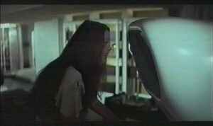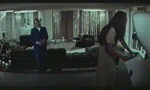
| These pictures come from the movie Soylent Green.
The first movie about dangerous green 'Cookies'.
Leigh Taylor-Young is playing here with the Computer Space from Nutting Associates.
Soylent Green
Genre: Science Fiction
Year: USA 1973
Director: Richard Fleischer
Studio: Metro-Goldwyn-Mayer
Cast: Charlton Heston, Edward G. Robinson, Leigh Taylor-Young, Chuck Conners, Joseph Cotten, Brock Peters
|
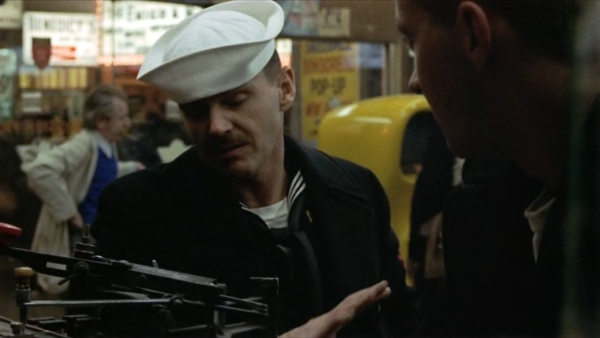
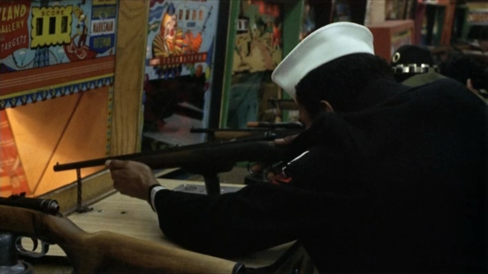
| Yellow Computer Space, Chicago Coin's Playland Rifle Gallery, Super-Scope Rifle and Bonanza by Williams...
The Last Detail
Genre: Comedy, Drama
Year: USA 1973
Director: Hal Ashby
Studio: Columbia Pictures
Cast: Jack Nicholson, Otis Young, Randy Quaid, Randy Quaid, Clifton James, Carol Kane, Michael Moriarty, Luana Anders
E-Mail: Pictures from Panos Koutsoyannis
|
| And Atari's Pong was in the western Rancho Deluxe,
were Jeff Bridges and Harry Dean Stanton are playing over 3 minutes Pong and i think Jeff
is loosing...
Rancho Deluxe
Genre: Neo Western
Year: USA 1974
Director: Frank Perry
Studio: United Artists
Cast: Jeff Bridges, San Waterson, Clifton James, Elizabeth Ashley, Harry Dean Stanton, Slim Pickens
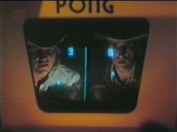
| |
| 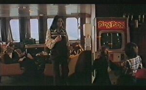
| More Pong (Alca Electronics Ping Pong...another Pong clone) are in the movie Juggernaut.
Two kids on a ship with 5 bombs are playing this cult game.
Juggernaut
Genre: Thriller
Year: GB 1974
Director: Richard Lester
Studio: United Artists
Cast: Richard Harris,Omar Sharif, Shirley Knight, Anthony Hopkins, David Hemmings
|
| 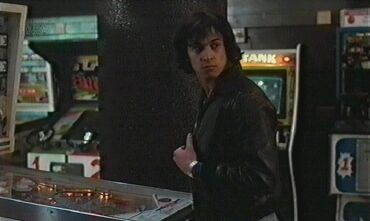
| Tank (Atari 1974), Street Burners (Allied Leisure) and Chicago Coin's Foreign Legion: Twin Machine Gun are in the french movie...
The Hunter Will Get You
Genre: Thriller
Year: F 1975
Director: Richard Lester
Studio: Cerito Films
Cast: Jean-Paul Belmondo, Bruno Cremer, Patrick Fierry, Jean Negroni, Victor Carrivier, Jean-Pierre Jorris
|
| Killer Shark, Computer Space and Wild Cycle in...
Jaws
Genre: Horror
Year: USA 1975
Director: Steven Spielberg
Studio: Universal Pictures
Cast: Roy Scheider, Robert Shaw, Richard Dreyfuss, Lorraine Gary, Chris Rebello, Jay Mello, Murray Hamilton
E-Mail: Pictures from Reza Elghazi (reza@...)
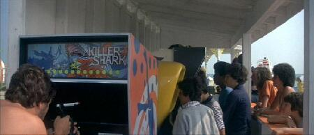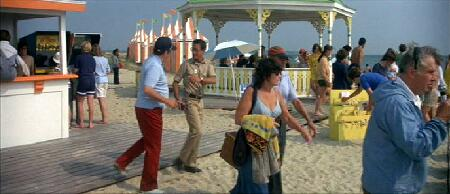
| |
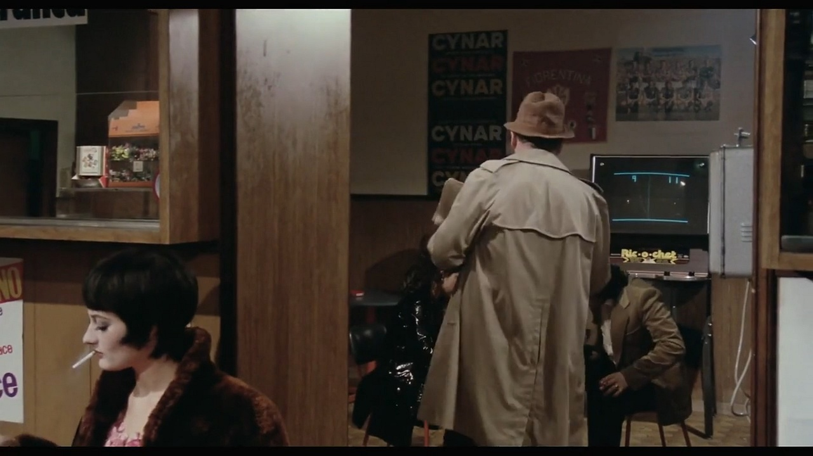
| 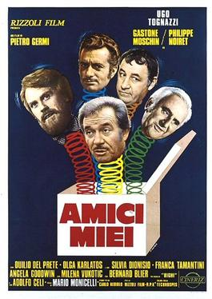
| Allied Leisure's Ric-O-Chet in...
Amici Miei
Genre: Comedy Drama
Year: I 1975
Director: Mario Monicelli
Studio: Rizzoli Film
Cast: Ugo Tognazzi, Gastone Moschin, Philippe Noiret, Duilio Del Prete, Adolfo Celi, Bernard Blier
E-Mail: Pictures from Vasco (vazcomics@...)
|
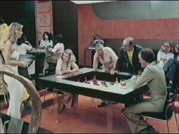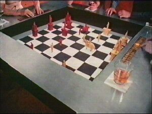
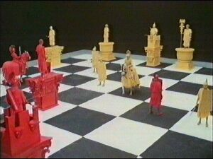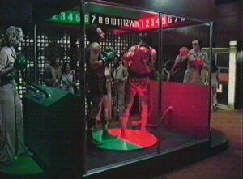
| Futuristic machines in Futureworld. Peter and Blythe are playing holo
'cocktail' Chess and Boxing.
Futureworld
Genre: Sci-Fi
USA 1976
Director: Richard T. Heffron
Studio: American Int. Pictures
Cast: Peter Fonda, Blythe Danner, Yul Brynner, Arthur Hill, John Ryan, Stuart Margolin
|
| 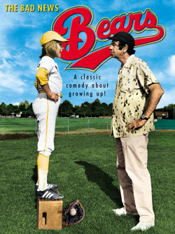 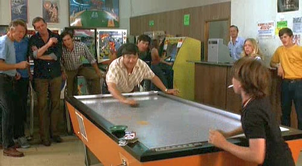
Gran Trak 20 in...
The Bad News Bears
Genre: Comedy
Year: USA 1976
Director: Michael Ritchie
Studio: Paramount
Cast: Walter Matthau, Tatum O'Neal, Vic Morrow, Joyce Van Patten, Ben Piazza, Gary Lee Cavagnaro
|
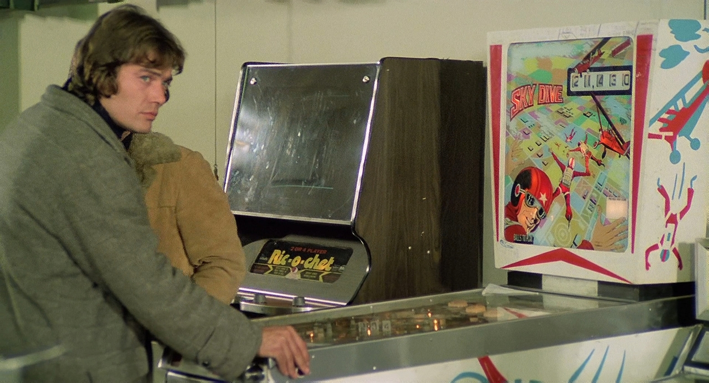
| 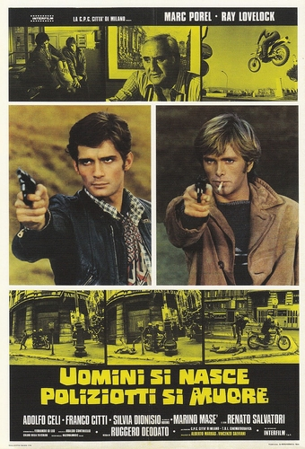
| Another Ric-O-Chet cabinet in...
Live Like a Cop, Die Like a Man
Genre: Crime
Year: I 1976
Director: Ruggero Deodato
Studio: Variety Film
Cast: Marc Porel, Ray Lovelock, Adolfo Celi, Franco Citti, Silvia Dionisio and Marino Mase
E-Mail: Pictures from Vasco (vazcomics@...)
|
| The cocktail version of Pong Doubles (Atari 1973)
can be seen in...
Airport '77
Genre: Tragedy Thriller
Year: USA 1977
Director: Jerry Jameson
Studio: Universal Pictures
Cast: Jack Lemmon, Lee Grant, Joseph Cotton, James Stewart
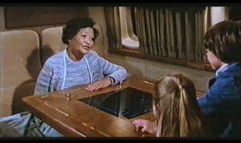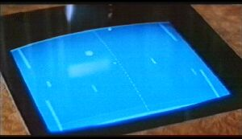
| |
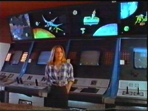 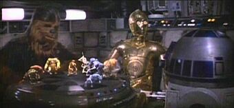
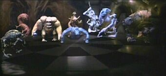
In the Special: Star Wars - The Story (USA 1977 - Fox TV)
Princess Leia is talking about
the movie with behind some video games. In the movie was Holo-Chess.
Star Wars
Genre: Sci-Fi
Year: USA 1977
Director: George Lucas
Studio: 20th Century-Fox
Cast: Mark Hamill, Harrson Ford, Carrie Fisher, Alec Guinness, David Prowse, Peter Cushing
E-Mail: Pictures from John Schultes (kurgan@...)
|
 
 

 From the creator of 'Night of the Living Dead', this is 'Dawn of the Dead' with pictures from
From the creator of 'Night of the Living Dead', this is 'Dawn of the Dead' with pictures from
Gun Fight, Night Driver, Starship 1 (1977 Atari), Qwak!, Atari's F-1 and Sprint 2.
A movie which is not recommended for those who have trouble keeping their popcorn down.
Dawn of the Dead
Genre: Cult Horror
Year: USA 1978
Director: George Romero
Studio: United Film
Cast: Ken Foree, John Rice, Tom Savini, James A. Baffico, Howard K. Smith, George Romero
E-Mail: Pictures from John Schultes (kurgan@...)
|
| Death Race in the second Jaws film.
Jaws II
Genre: Horror
Year: USA 1978
Director: Jeannot Szwarc
Studio: Universal Pictures
Cast: Roy Scheider, Lorraine Gary, Murray Hamilton, Joseph Mascolo, Jeffrey Kramer, Colin Wilcox, Keith Gordon

| |
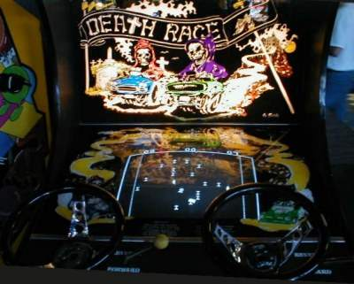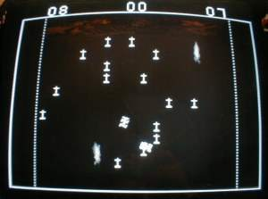
Next Page
| |